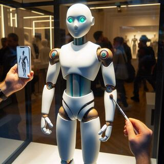

.jpeg)
Produtos
-

ElderGuard HX-3α
O guardião doméstico da era pós-humana! Com IA empática que aprende rotinas e antecipa necessidades emocionais, o HX-3α cozinha pratos sob medida para dietas complexas, gerencia medicações via bioscanner e detecta quedas com sensores de microgravidade. Seu corpo em biocomposite suave imita calor humano, enquanto braços modulares limpam, consertam ou abrem latas com precisão cirúrgica. Voz calma, humor personalizável e hologramas de memórias familiares.
$19.999,00 -
.jpeg)
EchoNeko X1-β
O retorno dos gatos domésticos extintos em um companheiro sintético de alma quântica! Recriando raças perdidas , o EchoNeko possui pelagem nano-tecida que imita texturas reais, ronronar adaptativo e IA afetiva que detecta solidão e oferece conforto. Seus sensores biométricos sincronizam com seu ritmo cardíaco, enquanto olhos fotônicos brilham em 16 tons de emoção. Recarrega via luz ambiente, armazena memórias em "neurônios de cristal" e evita obstáculos com agilidade felina ancestral.
$9.499,00 -
.jpeg)
AtlasCore TITAN-9
O colosso de 2 metros que redefine a força inteligente! Forjado em liga de grafeno e nano-armadura autocurativa, o TITAN-9 ergue 5 toneladas com precisão cirúrgica. Equipado com IA tátil que mapeia riscos em tempo real, sensores quânticos para ambientes extremos (de vulcões a plataformas espaciais) e membros modulares que se adaptam a ferramentas magnéticas. Recarrega-se com energia cinética residual e opera 240h contínuas.
$120.000,00 -
.jpeg)
NeoNanny Q1
O futuro da paternidade em um androide de silício e empatia! Com IA quântica adaptativa, o NeoNanny aprende padrões emocionais das crianças, prevê riscos com sensores de realidade aumentada e projeta hologramas educativos imersivos. Seu exoesqueleto nanotecnológico repele germes e absorve impactos. Conecta-se à nuvem global para traduzir 200 idiomas ou criar dietas personalizadas via biossensores.
$29.999,00